Transformation order
Remove invalid rows
Trim + standardize
Apply locale types
Validate counts
Relate tables
Order matters: remove rows that do not belong before spending time converting and correcting their values.
1. Budget vs Actuals
Source text
"($120,000)" · 6.00% · N/ATyped result
-120000 · 0.06 · nullPromote the source headers
- If the columns are named Column1, Column2, and so on, select Home → Use first row as headers.
- Confirm the first headers are Program ID, Program Name, Fiscal Year, and Quarter.
- Apply the same step to Program and Purchase Orders if their headers were not promoted during import.
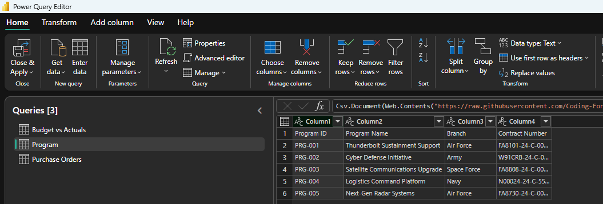
Keep data rows and remove the duplicate
- Filter Program ID with Text Filters → Begins With → PRG-. This safely removes blank and notes rows even if the footer grows.
- Select all columns and choose Home → Remove Rows → Remove Duplicates.
- Confirm the query now contains 120 rows.
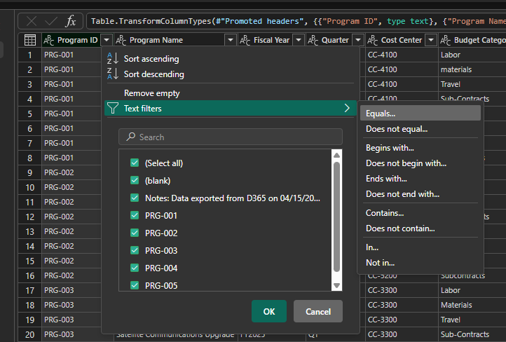
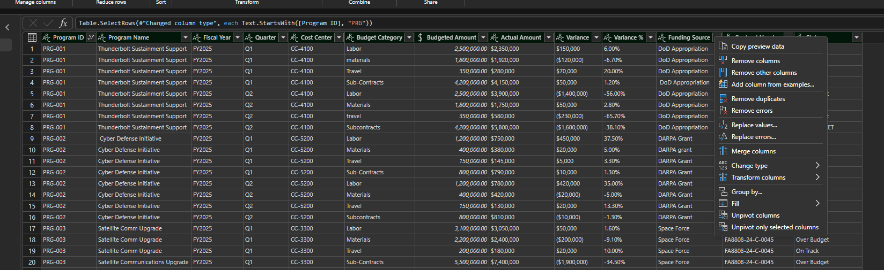
Trim and normalize text
- Select Program ID, Program Name, Cost Center, Budget Category, Funding Source, Contract Number, and Status.
- Choose Transform → Format → Trim.
- Capitalize Each Word for Budget Category and Status.
- In Budget Category, replace
Sub-ContractswithSubcontracts.
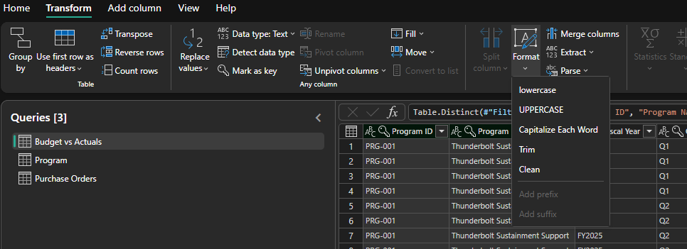
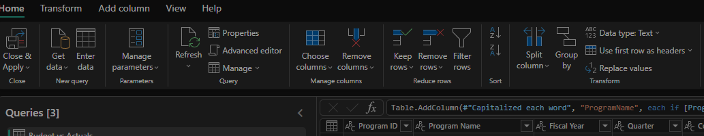
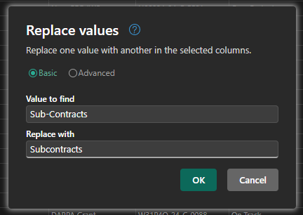
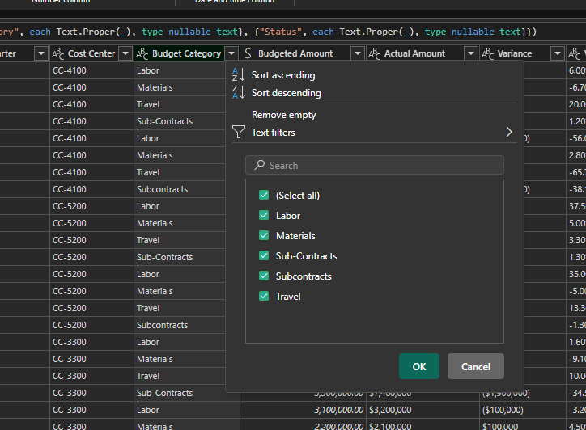
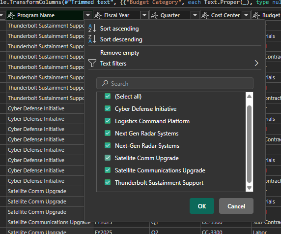
Standardize program names with a conditional column
- Select Add column → Conditional column.
- Name the new column ProgramName.
- Add the rule: if Program Name equals
Next Gen Radar Systems, outputNext-Gen Radar Systems. - Add an Else if rule: if Program Name equals
Satellite Comm Upgrade, outputSatellite Communications Upgrade. - For Else, choose the Program Name column so every already-valid name passes through unchanged.
- Select OK and verify that ProgramName contains only the five governed names.
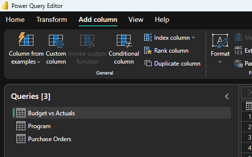
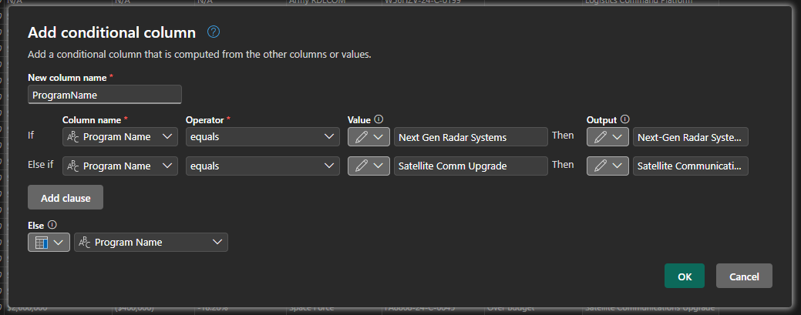
Replace the original name column
- Right-click the original Program Name column and choose Remove columns.
- Rename ProgramName to Program Name.
- Set its data type to Text.
- Open the filter list and confirm exactly five program names remain.
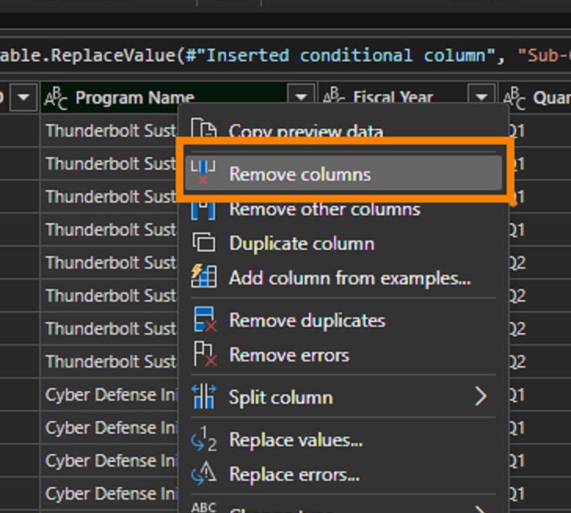
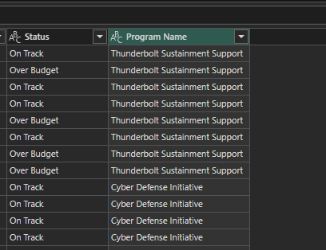
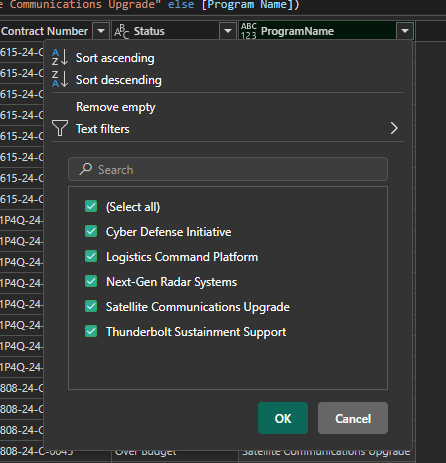
Convert money without losing negative values
- In Actual Amount, Variance, and Variance %, replace
N/Awith an empty value. - Select Budgeted Amount, Actual Amount, and Variance.
- Choose Transform → Data Type → Using Locale.
- Use Currency and English (United States). Parentheses must remain negative:
($120,000)becomes-120000.
Convert the percentage correctly
- Select Variance % and choose Data Type → Using Locale.
- Use Percentage and English (United States).
- Verify
6.00%becomes0.06, displayed as 6% after formatting.
Correction from the old guide: do not remove the percent sign and then convert to Decimal. That produces
6, which Power BI formats as 600%. Also do not strip parentheses without first preserving the negative sign.Add a reporting period
- Select Add Column → Custom Column.
- Name it Fiscal Period and use
[Fiscal Year] & " " & [Quarter]. - This creates sortable labels such as FY2025 Q1 and FY2026 Q2 for the trend chart.
2. Purchase Orders
Deduplicate and trim
- Select PO ID, then Home → Remove Rows → Remove Duplicates. Expect 20 rows.
- Select every text column and apply Transform → Format → Trim.
Clean amount and date types
- In Amount Paid, replace
NULLand-with0. - Select PO Amount, Amount Paid, and Amount Remaining; use Data Type → Using Locale → Currency → English (United States).
- Select Order Date and Delivery Date; use Data Type → Using Locale → Date → English (United States).
- Check Column Quality. Do not replace date errors with null until you inspect the original value and confirm it is invalid.
Normalize business labels
- Capitalize Each Word in PO Status and Priority.
- Replace
Apex Dynamics Corp.withApex Dynamics CorpandCenturion Inc.withCenturion Inc. - Replace
Satellite Comm UpgradewithSatellite Communications Upgrade.
3. Program
Protect the dimension key
- Trim all four columns.
- Set Program ID, Program Name, Branch, and Contract Number to Text.
- Confirm Program ID is unique: 5 rows and 5 distinct values.
Modeling rule: use Program[Program Name] in slicers and axes. The fact-table names were intentionally inconsistent; the dimension is the governed label.
Validate before loading
120Budget rows
20PO rows
5Programs
0Errors
- Set Column Profiling to the entire dataset.
- Confirm amount columns show numeric distributions, not text values.
- Confirm Variance % is Percentage and dates are Date.
- Select Home → Close & Apply.
Build the star schema
Program
dimension · 5 rows
dimension · 5 rows
Budget vs Actuals
fact · 120 rows
fact · 120 rows
Purchase Orders
fact · 20 rows
fact · 20 rows
- Open Model view.
- Relate Program[Program ID] to Budget vs Actuals[Program ID].
- Relate Program[Program ID] to Purchase Orders[Program ID].
- For both relationships use One-to-many (1:*), Single cross-filter direction, and make the relationship active.
- Hide Program Name in both fact tables to steer report authors toward the Program dimension.
Single-direction filters flow from Program to both facts. This lets one Program slicer filter budget and procurement without ambiguous loops.